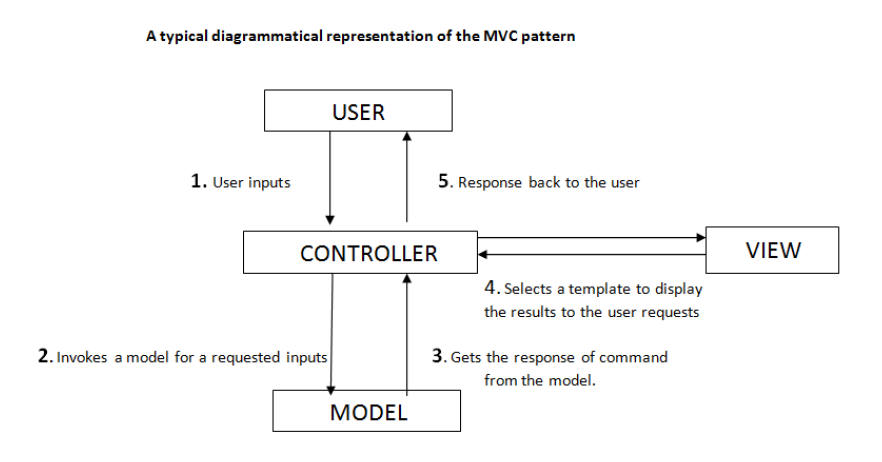
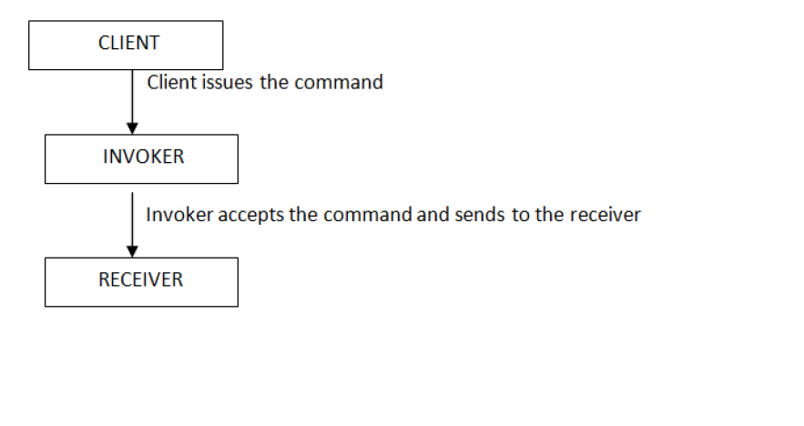
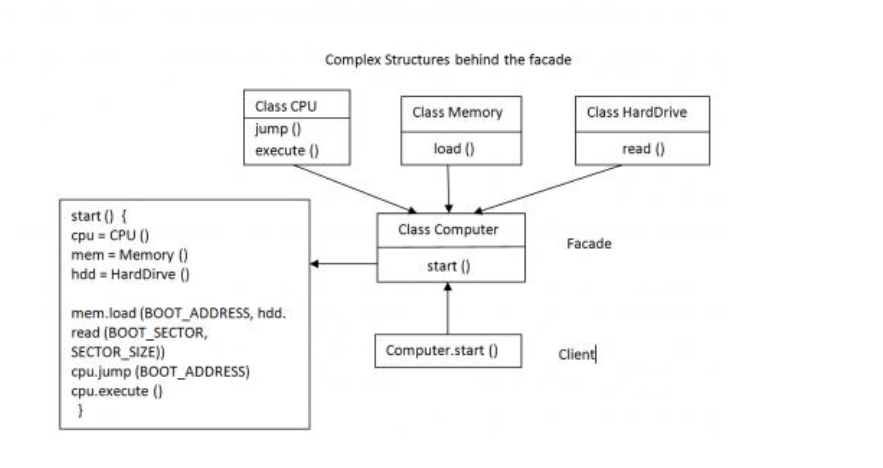

创建型模式(Creational Patterns)
结构型模式(Structural Patterns)
行为型模式(Behavioral Patterns)
定义 ： 这个模式孤立"domain logic"从input 和 presentation, 允许独立的开发，测试和维护。 其将应用程序分为三个部分 ：the Controller part, the Model part, the view part。
分工 ：
* controller关联user input到一个model和一个view
* Model从persistent storage中获取被呈现的数据
* View决定被获取的数据呈现给用户的形式

分工细节：
Controller : Controller被考虑作为user and processing(Model) & formatting(View) logic的中间者，来搭建桥梁。
Model : Model represents the business processing of the application, 逻辑的包装和数据库的访问。
View : 责任是显示结果，展示从Model中获取数据。
定义: a design pattern in which an object is used to represent and encapsulate all the information needed to call a method at a later time. This information includes the method name, the object that owns the method and values for the method parameters。
进一步说明：命令行模式是被分类在'Observer'设计模式中的一个。这个模式的关键实现在于：当Invoke对象内的方法被调用时，它完全不知道发生了什么事件，这个Invoker对象可以通过相似的接口被使用发送给不同对象命令。
分工：命令行模式包含三个组建
Client : 客户端实例化被包装的对象
Invoker : 当方法需要被调用时，Invoker负责调用，
需要的class，method, param被添加或者定义好了以后。
Receiver : 当对应的命令被给时，接受者包含执行这些指令的代码部分。

定义 : The observer pattern(a subset of the publish/subscribe pattern) is a software design pattern in which an object, called the subject, maintains a list of its dependants, called observers, and notifies them automatically of any state changes, usually by calling one of their methods. It is mainly used to implement distributed event handing systems.
分工 :
Publisher class 包含下列方法：
* 注册另外想要接受通知的对象。
* 通知main对象的任何发生给被注册的对象。(通过被注册对象的方法)
* 注销不再想接受通知的对象
Subscriber Class 包含：
* 被Publisher class使用的方法， 通知被注册对象任何改变的发生
An event：
* 触发一个状态的改变，导致Publisher调用它的通知方法
分工详细说明
总的来说，Subscriber对象能够通过Publisher对象 注册 或者 注销 自己。 因此无论什么时候一个事件发生时，将会驱动Publisher的通知方法，然后publisher通知Subscriber对象。这个通知将仅仅被传递到被注册的Subscriber对象。
定义：
facade(n) : the face or front of a building "The facade pattern is a software engineering design pattern commonly used with Object-oriented programming. (The name is by analogy to an architectural facade.) A facade is an object that provides a simplified interface to a larger body of code, such as a class library."
补充说明
Facade pattern 被归入Structural Design Patterns. Facade就是提供一个接口，隐藏系统的复杂和细节，提供简单的"front end"给客户端。 通过facade pattern，客户端可以使用更简单的接口完成更工作，不用考虑复杂的细节。
Facade pattern提供系统子集功能, 系统的其他功能可以被客户端直接自定义调用

定义：
The mediator pattern provides a unified interface to a set of interfaces in a subsystem. This pattern is considered to a behavioral pattern due to the way it can alter the program's running behavior.
补充说明：
典型的，调停者模式被用于许多类互相交流产生结果。 当软件开始被开发后，更多的用户请求被增加, 因此更多的功能需要被编码。 因此会增加存在类的交互 和 额外的类增加新的功能。 随着系统的复杂性增加，类之间的互动交流变得冗长且维护代码变得更加困难。
掉停者靠松耦合类之间的关系来解决这个问题，一个Mediator类负责类之间的交流。
对mediator模式认识的提高
mediator 布局包含类， 还包含类之间的沟通逻辑，意思是要封装函数。
定义:
The factory pattern is a creational design pattern used in software development to encapsulate the processes involved in the creation of objects
补充说明
工厂模式创建一个super类， 其提供抽象接口来创建一个特别类型的对象。 但是其本身不决定具体的对象被创建，而是由它的子类来决定。 由一个创建类的层次结构来支持工厂类创建和返回。
工厂类设计模式被使用于，在运行时，基于一个"type"作为输入来决定对象创建的时候，基于工厂模式来编写代码可能结果更有扩展性和可维护。 例如增加一个new type, 不需要修改存在的类，它仅仅涉及对应new type的new subclasses增加。
简单的说， 使用工厂模式的情况在：
* 一个类必须在用户请求的时候才能决定哪一类对象被创建
* 在creater class 和 可用该类创建对象的类之间建立一个extensible association(扩展关联)
定义
A proxy, in its most general form, is a class functioning as an interface to something else. The proxy could interface to anything: a network connection, a large object in memory, a file, or some other resource that is expensive or impossible to duplicate. A well-known example of the proxy pattern is a reference couting pointer object.
Proxy Pattern 是一个Structural Design Patterns.
组件
代理模式有三个基本的元素
典型使用场景
具体实例